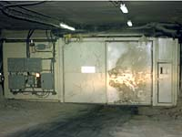
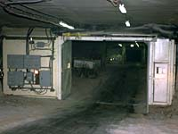
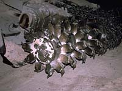
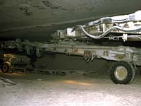
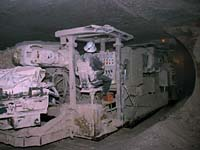

|
"Hazardous Area". Please be careful where you walk.
The trains, heavy equipment, machinery, brine pools
and other hazards can be very dangerous. |
Potash Corporation of Saskatchewan - Allan DivisionUnderground |
Potash is sorted according to the size of the particles. The sorter is shown in the image at the left. |

Conveyor belts move the mined potash along underground. There are two shafts in the mine -- one carries miners and the other, ore. |

Conventional underground room and pillar mining techniques are used at Allan, with ore mined from "rooms" separated by
wide pillars left to support the overburden. |

This is the airlock at the mine. |
Potash is loaded on underground
conveyors, transported to the shaft and hoisted to the surface.
|
Ore is stored underground in containers capable of holding several thousand tonnes. Ore is transported from the bin on the conveyor belt to the loading pocket. A measuring bin ensures that the right amount of ore is loaded into the ore skip, a box in the production shaft that holds about 22 to 23 tonnes. The skip is lifted to the surface by the hoist for unloading speeds of 550-1100 meters per minute. |
Potash ore has a low compressive strength -- it tends to deform or creep if under sufficient pressure -- so that about 65 percent of the material in the Saskatchewan mines must be left as pillars. The size of rooms excavated, however, can be substantial -- more than 18m wide and 1500m long.
|
There a two main mining machines used for the purpose of creating tunnels by cutting the ore -- the Marietta Miner or Four-Rotor Borer and the Two-Rotor Borer |

On the front end of each machine are two rotating bits. Because the ore is soft like common salt, these large, self-propelled mining machines with the rotary blades can move into the potash orebody at a speed of about 1m every three minutes, cutting a large, high, wide swath. |
The broken ore is automatically transferred to the rear of the machine. Pillars of potash are left intact at frequent intervals to support ht roof. Once broken, potash ore is carried to the shafts by the conveyor belts, where it is crushed and hoisted to the surface. |
Breathing fresh air 3 miles away from the entrance to the underground mine is not a problem. Fresh air is taken down the shaft at a fast rate and the air is circulated throughout the travelways, shops and production panels using fans, doors and brattice curtain. At Allan, the main fans are located above the ground and the booster fans are underground. |

Each mining machine has a fan on it and one fan at the start of each conveyor panel. Each panel receives about 23.8 m3/sec of air. |
Because the Saskatchewan potash deposits occur in undisturbed, almost horizontal layers 2m to 3m thick, mining usually can be carried out on a single level. |

Six Goodman Wabco continuous boring machines capable of cutting a 3.3
meter by 5.5 meter (11 feet by 18 feet) path and mining 600 tonnes per hour excavate the ore. |
Potash is mined using two and four rotor continuous boring machines. They can mine up to 882 tonnes per hour, making paths of up to 7.9 meters wide and 2.4 meters high. PCS has automated some machines to automatically measure ore grades and mine only the richest ore.
|
Conveyor belts carry the ore to underground bins, where it is stored until transported to the loading pocket of the shaft hoist.
|

Potassium (identified by the letter K, its chemical symbol) is found in every cell. It is the third most abundant mineral in our bodies, surpassed only by calcium (Ca) and phosphorus (P). |
More than 85
percent of the body's K is found in major tissues and organs such as muscles, skin, blood, the
digestive tract and the liver. Potassium affects the life and lifestyle of every living being. For example, while orbiting the earth, one
of America's astronauts developed an irregular heart beat due to a shortage of K in his diet. |
Athletes
often drench themselves with special nutrient fortified drinks to restore K lost with body fluids. Each
day millions of patients with heart and blood pressure problems require extra K in their diets to avoid
potentially dangerous side effects from medication. In fact, anyone experiencing high fever, excessive body fluid loss, severe stress or shock, or a traumatic experience can run short on K.
|

Potassium's role in plant growth is quite similar to that for humans. One big difference is that plants
cannot tell us when they are hungry or when they are being restricted by a nutrient shortage. Chemical
analysis of certain plant parts is one tool available to give an early indication of nutrient stress or
"hidden hunger".
|
Nearly every aspect of plant growth is dependent upon an adequate supply of K. Along with nitrogen
(N) and phosphorus (P), it is one of the three primary nutrients needed in large amounts. Potassium is a team player
and helps to improve a plant's disease resistance, tolerance to water stress, winter hardiness, tolerance
to crop pests, efficient use of N and other nutrients, yield, and quality. |
Since potassium chloride is a salt, it tends to be found where there has been intensive evaporation of salt water. Southern Saskatchewan was once covered by a dead sea; as it evaporated, it left very even layers of potash ore three to seven meters thick now located roughly a kilometre below the prairie.
|
Potash occurs near the top of a thick sequence of halite and anhydrite comprising the Middle Devonian Prairie Formation. In Saskatchewan, this formation is at a depth of 400 m to over 2500 m and attains a maximum thickness of just over 200 m. The deposits in Saskatchewan, are part of a vast potash-bearing region extending across southern Saskatchewan and into Manitoba, Montana and North Dakota. The mineralized region is subdivided according to economic potential based on ore grade and required mining method. Conventional underground mining is conducted at depths down to about 1100 m whereas deeper ore is more suited to solution mining methods. |
Potash is the great success story in Saskatchewan's mining history. In the 1980's,
potash topped oil and natural gas as the resource with the greatest value of production. In 1943,
a core sample from an exploratory oil well near Radville, Saskatchewan, showed potash at a depth
of almost 2 km. Three years later, a core sample from an exploratory well near Unity revealed
high-grade potash at a
depth of about 1 km. This discovery of potassium-bearing ore at a more accessible depth immediately
stimulated great interest on the part of government and industry.
|
Exploration was stepped up over the next few years, and it soon became evident that one of
the world's major potash deposits lay beneath southern Saskatchewan. Exploration in the 1950s
revealed the existence of huge potash beds underlying most of southern Saskatchewan. The first
potash mine in Saskatchewan, owned by the Potash Company of America, was completed in 1958.
The mine flooded the same year and did not return to production until 1965. |
The I.M.C. mine at Esterhazy was first to overcome the Blairmore Formation.
The mine's shafts had to be sunk through a treacherous 300 foot layer of unconsolidated
sand and water about halfway to the potash deposit. A successful technique of freezing
this layer until the shaft is dug and sealed in tubbing was developed. This large
potash mine (K-1)commenced the first commercial production of potash in 1962 and has been
in continuous operation since production started. A second shaft, about 10 km away,
was completed by IMC in 1967; the two mines (K-1 & K-2) are connected underground.
|
Another mining operation went into production in 1964, and three more started up in 1968.
By 1974, 10 potash mines were operating in Saskatchewan with a total annual production capacity
of nearly 13 million tonnes of potassium chloride.
|
With technical difficulties taken care of, other problems involving markets and
politics intervened. Temporary oversupply affected marketing conditions in the late
sixties and involved some cross-border disputes. A taxation problem inhibited the expansion
in the seventies, culminating in the provincial government's acquisition of about half the
productive capacity. |
The Potash Corporation of Saskatchewan operates six mines in Saskatchewan plus one in New Brunswick and another in Utah.
The Saskatchewan mining area is large covering the major centres
of Saskatoon,
Regina, Esterhazy and Rocanville. The majority of production (>90%) is exported. The Allan mine is just one of these magnificent potash operations |
Special ducting, braces and brackets have to be custom contructed on site.
|
Special 4-wheel drive vehicles have to be used to move around in this undergraound city
|